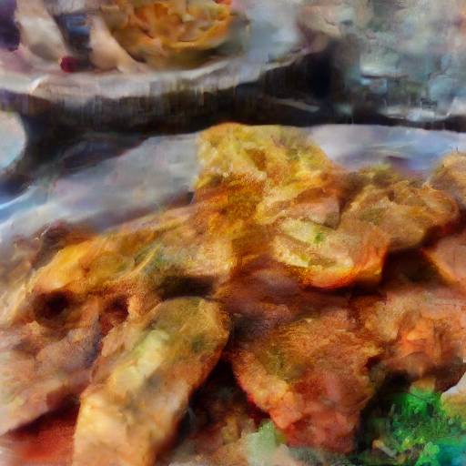
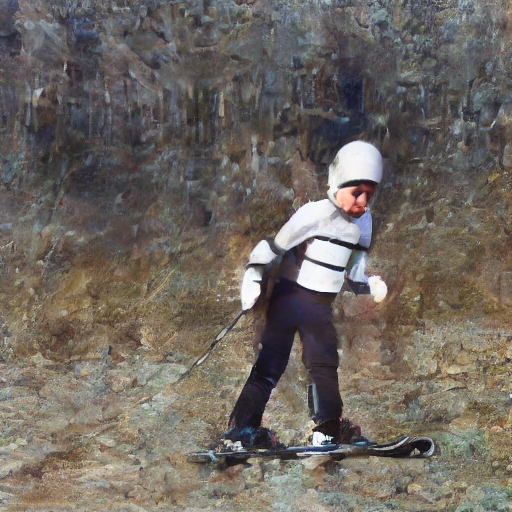
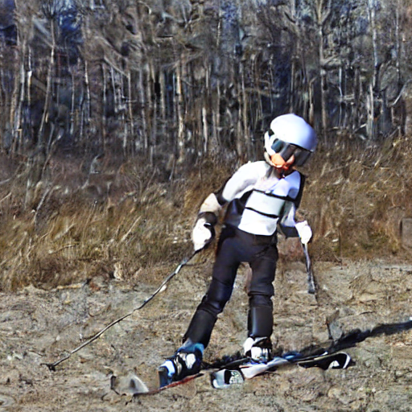
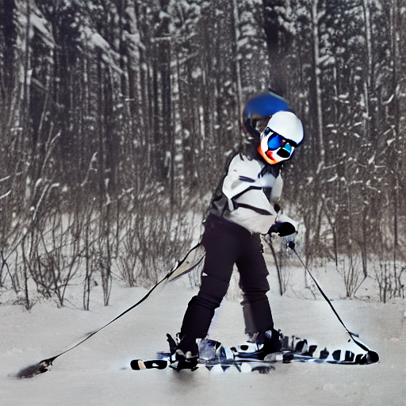

Modern generative models — the engines behind today's image generators and molecular simulators — turn noise into data by following a smooth trajectory, integrated step by step with a numerical solver. Many tasks (editing a generated image, recovering the noise that produced it, running a simulation backwards in time) require retracing that trajectory in reverse, but ordinary solvers leak tiny rounding errors at every step and the path home drifts away from where it started. Rex is a new family of solvers that are algebraically reversible: the reverse step exactly undoes the forward step, so the full trajectory can be replayed in either direction with near‑machine precision. It handles both the deterministic (ODE) and stochastic (SDE) settings used by diffusion and flow models, comes with strong theoretical guarantees on accuracy and stability, and delivers measurable improvements on Boltzmann sampling, image generation, and image editing.
Drag a panel to rotate · scroll/pinch to zoom · space to play/pause · R to reset
Diffusion models have quickly become the state of the art across many generation tasks; sampling from them amounts to integrating an ODE or SDE from a simple prior to a complex data distribution . For diffusion models the reverse-time generative process is itself an SDE , and many downstream applications require solving the same equation in the encoding direction. Encoding samples from the data distribution back into the model's underlying prior is referred to as the inversion of the diffusion model, and it requires a bijective map between the two distributions.
Inversion underpins a range of tasks: image editing encodes a real image back to its latent noise and re-decodes under a new prompt ; Boltzmann sampling uses the change-of-variables formula to assign exact likelihoods ; gradient-based fine-tuning and reward-guided sampling require accurate adjoints . In each of these settings the round trip $\boldsymbol x_0 \!\to\! \boldsymbol x_T \!\to\! \boldsymbol x_0$ must close exactly; an approximate inverse is not sufficient.
The continuous flow itself is a bijection; truncation error from discretization is what breaks the round trip. Several prior works have proposed reversible solvers for the probability flow ODE, namely EDICT , BDIA , and BELM . These schemes are, however, plagued by issues of low order of convergence and a lack of linear stability, amongst other undesirable properties. To the best of our knowledge, no prior scheme achieves exact inversion for diffusion SDEs without storing the entire Brownian trajectory in memory, which precludes adaptive step sizes and is impractical at scale.
Moreover, reversibility has so far been constructed one solver at a time; no general procedure exists for converting an explicit (S)RK scheme — Euler, midpoint, RK4, Dormand–Prince, Euler–Maruyama — into a reversible solver tailored to the semi-linear structure of the diffusion ODE/SDE. This is the gap Rex closes.
Two largely independent research traditions have circled this problem from opposite directions. The first grew up inside the diffusion community itself, retrofitting bijective structure onto specific samplers: EDICT’s coupled latent trick, BDIA’s bidirectional integration, and BELM’s linear-multistep construction each reverse-engineer reversibility into one particular solver. The second comes from the neural differential-equation community, where reversibility has been pursued as a memory-efficiency device for training — from the original Neural ODE adjoint to MALI, reversible Heun, and the recent McCallum–Foster framework. Rex sits at the confluence: it borrows the McCallum–Foster coupling from the neural-DE lineage and adapts it to the exponential-integrator structure that the diffusion lineage relies on, yielding a single construction that subsumes both.
The construction itself is the subject of the next section. We first present the explicit (S)RK family that Rex operates on, then the exponential–integrator step that absorbs the semi-linear drift, and finally the McCallum–Foster coupling that closes the round trip in closed form.
We propose Rex, a Reversible Exponential (Stochastic) Runge–Kutta family of solvers for diffusion models. Given any explicit (S)RK scheme $\boldsymbol\Phi$, Rex constructs an algebraically reversible solver tailored to the semi-linear structure of the diffusion ODE/SDE. The construction proceeds in two stages: an exponential-integrator step which absorbs the linear drift, followed by a McCallum–Foster-style coupling which yields a closed-form inverse.
The coupling in step $\boldsymbol\Upsilon$ follows McCallum & Foster (2024) , which is, to our knowledge, the only prior algebraically reversible ODE solver with a non-trivial region of stability and arbitrarily high convergence order.McCallum & Foster refer to their scheme simply as reversible X, where X is the underlying single-step solver. We follow the paper convention and call it the McCallum–Foster method. Earlier algebraically reversible solvers — the asynchronous leapfrog and reversible Heun methods — were either restricted to ODEs or possessed a vanishing region of stability. Rex generalizes the McCallum–Foster construction to exponential integrators and to stochastic differential equations.
Every numerical scheme is reversible in the analytic sense: one can recover the previous step by fixed-point iteration on the update equation.Provided the step size $h$ is small enough for the fixed-point iteration to converge. This is, however, both expensive and only approximate. A scheme is algebraically reversible if the inverse map admits a closed-form expression. Rex maintains an auxiliary state $\hat{\boldsymbol x}_n$ alongside $\boldsymbol x_n$ precisely so that the inverse map can be written in closed form.
The coupling parameter $\zeta \in (0,1]$ controls a trade-off between linear stability and exact inversion.$\zeta = 1$ recovers exact algebraic reversibility; $\zeta < 1$ introduces a small mixing of the auxiliary state which enlarges the linear stability region at the cost of a residual inversion error. We use $\zeta = 1$ throughout the empirical results. The weights $\{\kappa_n\}$ and reparameterized time variable $\varsigma$ are determined by the noise schedule $(\alpha_t, \sigma_t)$; specializing these recovers the data-prediction, noise-prediction, ODE, and SDE cases under a single scheme.
Reversibility for SDEs poses an additional challenge: a naïve construction stores the entire realization of the Brownian motion in memory to replay it in reverse,This is the approach taken by CycleDiffusion and similar reversible-by-storage methods. which prohibits adaptive step sizes. Rex avoids this by fixing a single seed $\omega \in \Omega$ and reconstructing any sub-interval of the Brownian trajectory on demand through a splittable PRNG, following the Brownian interval construction of Kidger et al. . The resulting scheme supports adaptive step-size SDE solvers while remaining exactly reversible.
The numerical properties of Rex are inherited from the underlying scheme $\boldsymbol\Phi$: the order of convergence, the region of linear stability, and (in the SDE case) the strong order of convergence are all preserved by the construction. To the best of our knowledge, Rex is also the first reversible solver framework that achieves exact inversion for diffusion SDEs without storing the entire realization of the Brownian motion .
A consequence of the Lawson-based construction is that Princeps $\boldsymbol\Psi$, instantiated with appropriate choices of the base scheme $\boldsymbol\Phi$, reduces exactly to many of the most popular numerical solvers used in the diffusion literature.A full statement appears in the paper as Theorem 3.10 — Rex subsumes previous solvers; the proofs are deferred to the appendix. Each row of the table below identifies a choice of $\boldsymbol\Phi$, the existing solver it recovers, and the corresponding algebraically reversible Rex variant.
| Choice of base scheme $\boldsymbol\Phi$ | Princeps $\boldsymbol\Psi$ recovers | Rex variant |
|---|---|---|
| Euler (ODE) | DDIM | Reversible DDIM |
| Euler — noise prediction | DPM-Solver-1 | Reversible DPM-Solver-1 |
| Midpoint / 2-stage | DPM-Solver-2, DPM-Solver++(2S) | Reversible DPM-Solver-2 / ++ |
| 1-step (data) — VP schedule | DPM-Solver++1, gDDIM | Reversible gDDIM |
| Euler–Maruyama | SDE-DPM-Solver-1 / SEEDS-1 | Reversible SDE-DPM-Solver-1 |
| RK4 / Dopri5 / ShARK | (no prior analogue) | High-order reversible solver |
| Property | EDICT | BDIA | O-BELM | Rex (ours) |
|---|---|---|---|---|
| Algebraically reversible | ✓ | ✓ | ✓ | ✓ |
| Arbitrary order of convergence | ✗ | ✗ | ✓ | ✓ |
| Non-trivial region of linear stability | ✗ | ✗ | ✗ | ✓ |
| Constructed from any explicit (S)RK $\boldsymbol\Phi$ | ✗ | ✗ | ✗ | ✓ |
| Diffusion SDE support | ✗ | ✗ | ✗ | ✓ |
| Adaptive step size | ✗ | ✗ | ✗ | ✓ |
We evaluate Rex in five regimes: (a) the empirical inversion error of a Stable Diffusion v1.5 round trip; (b) unconditional image generation on CelebA-HQ; (c) text-to-image generation on Stable Diffusion v1.5 with COCO captions; (d) round-trip image editing , for which exact inversion is essential; and (e) Boltzmann sampling of molecular conformations , for which an approximate inverse invalidates the change-of-variables likelihood and breaks self-normalized importance sampling.
For an algebraically reversible solver, encoding a Stable Diffusion latent and then decoding it should recover the original latent up to floating-point rounding error. We measure the latent-space MSE of this round trip on Stable Diffusion v1.5 in fp32 at 10, 20, and 50 sampling steps; the results are shown in Figure 3.
Figure 3. Latent reconstruction MSE as a slopegraph: each line is one solver's error as the number of sampling steps grows from 10 to 50, plotted on a log₁₀ axis whose floor is the fp32 round-off level at $\sim\!10^{-11}$. Lines that slope down improve with more steps; O-BELM's slopes up—a linear-stability failure consistent with §3. Hover any dot for the exact value; click a step count to focus its column; click a method in the legend to hide it.
Several observations follow. DDIM is not reversible, so its error simply reflects the truncation error of the underlying solver. EDICT and BDIA both improve with the number of steps but plateau in the $10^{-7}$–$10^{-9}$ range due to numerical instability. O-BELM exhibits a more striking failure mode: the error grows with the number of steps, since the iteration is nowhere linearly stable and round-off error accumulates.This is consistent with the theoretical claim in Section 03: a scheme with no non-trivial region of linear stability cannot maintain bounded inversion error as the number of steps grows. Rex sits at the floating-point round-off floor and improves monotonically with step count.
We evaluate $10^4$ samples under identical seeds, using the DINOv2 Fréchet distance , FD$_\infty$ , precision/recall , density, and coverage . Rex with Euler–Maruyama (the SDE variant) outperforms every prior reversible solver at 20 and 50 sampling steps; the ODE variants (Midpoint, RK4) match O-BELM at lower step counts and exceed it at higher ones. Figure 4 and Table 3 summarize the results.
| Solver | Steps | FD ↓ | FD∞ ↓ | Precision ↑ | Recall ↑ | Density ↑ | Coverage ↑ |
|---|---|---|---|---|---|---|---|
| EDICT | 10 | 1042.89 | 1034.82 | 0.49 | 0.10 | 0.19 | 0.11 |
| BDIA | 10 | 900.95 | 894.23 | 0.61 | 0.10 | 0.28 | 0.14 |
| O-BELM | 10 | 605.52 | 596.47 | 0.78 | 0.18 | 0.56 | 0.34 |
| Rex (Midpoint) | 10 | 607.20 | 597.04 | 0.78 | 0.21 | 0.60 | 0.37 |
| Rex (RK4) | 10 | 633.90 | 617.11 | 0.81 | 0.22 | 0.64 | 0.36 |
| Rex (E–M, SDE) | 10 | 610.16 | 598.56 | 0.79 | 0.10 | 0.61 | 0.37 |
| DDIM (non-rev.) | 10 | 727.75 | 716.41 | 0.75 | 0.14 | 0.49 | 0.27 |
| EDICT | 20 | 752.68 | 743.89 | 0.68 | 0.15 | 0.36 | 0.21 |
| BDIA | 20 | 611.47 | 601.37 | 0.76 | 0.19 | 0.50 | 0.30 |
| O-BELM | 20 | 489.94 | 477.82 | 0.82 | 0.23 | 0.71 | 0.43 |
| Rex (Midpoint) | 20 | 539.96 | 527.85 | 0.81 | 0.26 | 0.66 | 0.41 |
| Rex (RK4) | 20 | 547.24 | 533.30 | 0.82 | 0.27 | 0.71 | 0.43 |
| Rex (E–M, SDE) | 20 | 460.42 | 447.01 | 0.86 | 0.21 | 0.91 | 0.51 |
| DDIM (non-rev.) | 20 | 570.11 | 555.26 | 0.79 | 0.20 | 0.62 | 0.38 |
| EDICT | 50 | 551.13 | 534.73 | 0.78 | 0.24 | 0.60 | 0.37 |
| BDIA | 50 | 500.79 | 489.24 | 0.82 | 0.27 | 0.70 | 0.44 |
| O-BELM | 50 | 476.29 | 463.07 | 0.84 | 0.29 | 0.77 | 0.45 |
| Rex (Midpoint) | 50 | 505.67 | 494.94 | 0.81 | 0.29 | 0.70 | 0.44 |
| Rex (RK4) | 50 | 511.17 | 498.94 | 0.80 | 0.27 | 0.69 | 0.44 |
| Rex (E–M, SDE) | 50 | 391.93 | 381.01 | 0.87 | 0.28 | 0.98 | 0.56 |
| DDIM (non-rev.) | 50 | 490.88 | 479.87 | 0.80 | 0.26 | 0.67 | 0.45 |
Best in mauve, second-best underlined. Rex (Euler–Maruyama) wins FD, FD∞, Precision, Density, and Coverage at 20 and 50 steps. Source: Table uncond_fid in the preprint.
We sample under 1000 COCO captions with shared seeds, scored by CLIP score, ImageReward, and PickScore. The stochastic variants of Rex (Euler–Maruyama and ShARK) achieve higher aesthetic and prompt-alignment scores than every reversible baseline; both also exceed the non-reversible DDIM baseline. Figure 5 and Table 4 summarize the metrics across step counts.
| Solver | Steps | CLIP ↑ | Image Reward ↑ | PickScore ↑ |
|---|---|---|---|---|
| DDIM (non-rev.) | 10 | 31.78 | 0.033 | 21.06 |
| EDICT | 10 | 27.97 | −1.219 | 19.52 |
| BDIA (γ=0.5) | 10 | 31.57 | −0.006 | 20.98 |
| O-BELM | 10 | 31.47 | 0.051 | 20.88 |
| Rex (Midpoint) | 10 | 31.62 | 0.119 | 21.28 |
| Rex (RK4) | 10 | 31.69 | 0.156 | 21.35 |
| Rex (E–M, SDE) | 10 | 31.68 | 0.222 | 21.50 |
| Rex (ShARK, SDE) | 10 | 31.55 | 0.239 | 21.51 |
| DDIM (non-rev.) | 20 | 31.76 | 0.136 | 21.29 |
| EDICT | 20 | 31.04 | −0.134 | 20.84 |
| BDIA (γ=0.5) | 20 | 31.48 | 0.055 | 21.16 |
| O-BELM | 20 | 31.43 | 0.105 | 21.00 |
| Rex (Midpoint) | 20 | 31.64 | 0.179 | 21.38 |
| Rex (RK4) | 20 | 31.60 | 0.187 | 21.40 |
| Rex (E–M, SDE) | 20 | 31.56 | 0.239 | 21.66 |
| Rex (ShARK, SDE) | 20 | 31.56 | 0.249 | 21.66 |
| DDIM (non-rev.) | 50 | 31.24 | 0.247 | 21.04 |
| EDICT | 50 | 31.17 | −0.055 | 21.05 |
| BDIA (γ=0.5) | 50 | 31.48 | 0.066 | 21.21 |
| O-BELM | 50 | 31.51 | 0.160 | 21.16 |
| Rex (Midpoint) | 50 | 31.60 | 0.198 | 21.41 |
| Rex (RK4) | 50 | 31.57 | 0.195 | 21.41 |
| Rex (E–M, SDE) | 50 | 31.33 | 0.264 | 21.70 |
| Rex (ShARK, SDE) | 50 | 31.39 | 0.263 | 21.72 |
Best in mauve, second-best underlined. Rex variants take the best Image Reward and PickScore at every step count. Source: Table cond_gen in the preprint.




pix2pix, Stable Diffusion v1.5Round-trip editing is a canonical task for which exact inversion is required: a real image is encoded into noise under its original caption, then decoded under a modified edit caption. We evaluate on the pix2pix dataset, measuring prompt alignment with CLIP, ImageReward, and PickScore, and faithfulness to the source image with LPIPS.
Rex with the Dopri5 base scheme (an adaptive 5(4) Dormand–Prince method) is, to our knowledge, the first adaptive-step-size reversible solver applied to diffusion-based editing.Adaptive step-size SDE solvers, prior to Rex, required storing the entire Brownian trajectory in memory. The Brownian-interval construction discussed in Section 02 is what makes the adaptive variant reversible. EDICT failed entirely on this benchmark, collapsing to the identity map; BDIA also failed, with an LPIPS of $0.885$ — roughly an order of magnitude worse than the next-best reversible method. Rex preserves source-image faithfulness while still following the edit instruction, as shown in Figure 6 and Table 5.
pix2pix dataset, Stable Diffusion v1.5, 50 inversion + 50 generation steps. Each axis is normalized across the five solvers (LPIPS inverted) so that larger = better. Rex (Dopri5) sits on or near the outer ring across all four axes; BDIA collapses to the center because its LPIPS is 8× worse than every other reversible method. EDICT is omitted — it failed entirely on this benchmark.| Solver | Image Reward ↑ | CLIP ↑ | PickScore ↑ | LPIPS ↓ |
|---|---|---|---|---|
| DDIM (non-rev.) | −0.564 | 19.17 | 18.367 | 0.214 |
| BDIA | −2.205 | 18.57 | 16.956 | 0.885 |
| O-BELM | −0.639 | 19.16 | 18.416 | 0.140 |
| Rex (Euler) | −0.551 | 19.17 | 18.721 | 0.109 |
| Rex (Dopri5) | −0.547 | 19.16 | 18.698 | 0.107 |
Best in mauve, second-best underlined. Rex (Dopri5) wins Image Reward and LPIPS; even Rex (Euler) ties DDIM on CLIP while halving its LPIPS. EDICT is omitted — it failed entirely on this benchmark. Source: Table image_edit in the preprint.
Sampling from a Boltzmann distribution $p_{\text{target}}(\boldsymbol x) \propto \exp(-\mathcal E(\boldsymbol x))$ with a neural ODE requires exact likelihoods, computed via the change-of-variables formula. If the discretized solver is not a bijection the resulting likelihoods are biased, and self-normalized importance sampling then produces estimators that are inconsistent in expectation .The bias does not, in general, decrease with more samples; it reflects a systematic mismatch between the integrated density and the true density.
We train a Diffusion Transformer on tri-alanine (Ala–Ala–Ala) and evaluate sampling quality with the effective sample size (ESS) and the 2-Wasserstein distance to the molecular-dynamics ground truth, taken with respect to the energy distribution ($\mathcal E\text{-}\mathcal W_2$) and the dihedral-angle distribution ($\mathbb T\text{-}\mathcal W_2$).
| Model | Solver | $\mathcal E$-$\mathcal W_2$ ↓ | $\mathbb T$-$\mathcal W_2$ ↓ | ESS ↑ |
|---|---|---|---|---|
| RegFlow | — | 1.051 | 1.612 | 0.029 |
| SBG (IS) | — | 0.758 | 0.502 | 0.052 |
| SBG (SMC) | — | 0.598 | 0.503 | — |
| ECNF++ | Dopri5 | 2.206 | 0.962 | 0.003 |
| DiT | Dopri5 | 0.737 | 0.468 | 0.140 |
| DiT | Rex (Dopri5) | 0.495 | 0.497 | 0.104 |
Best in mauve, second-best underlined. Source: Table bg_results in the preprint.
Substituting Rex (Dopri5) for the non-reversible Dopri5 baseline within the same DiT pipeline reduces the energy-distribution Wasserstein error from $0.737$ to $\mathbf{0.495}$, a $33\%$ reduction, while leaving the dihedral-angle metric essentially unchanged. This is consistent with the inversion-error analysis above: exact reversibility ensures that the change-of-variables likelihoods used in importance sampling are unbiased, which the non-reversible Dopri5 baseline cannot guarantee.
We have proposed Rex, a family of algebraically reversible solvers for diffusion models, constructed by combining Lawson exponential integration with a McCallum–Foster-style coupling. Rex inherits an arbitrarily high order of convergence from the underlying explicit RK scheme in the ODE case, and to the best of our knowledge furnishes the first method for exact inversion of diffusion SDEs without storing the entire realization of the Brownian motion. The intermediate Princeps family subsumes several widely used diffusion solvers — DDIM, DPM-Solver, gDDIM, and SEEDS-1 — as special cases, so that Rex yields algebraically reversible analogues of each. Empirically, Rex functions as a capable numerical scheme across unconditional and conditional image generation, round-trip image editing, and Boltzmann sampling of molecular conformations; in the Boltzmann setting, exact reversibility yields an unbiased change-of-variables likelihood and a $33\%$ reduction in the energy-distribution Wasserstein metric over the non-reversible baseline.